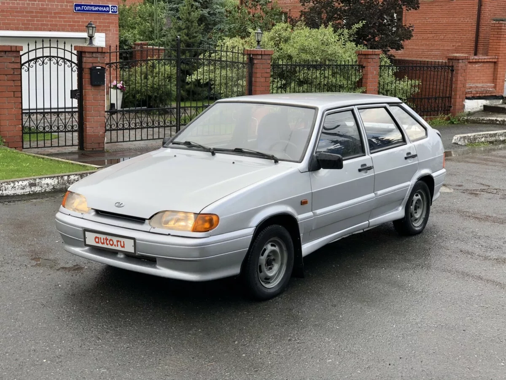
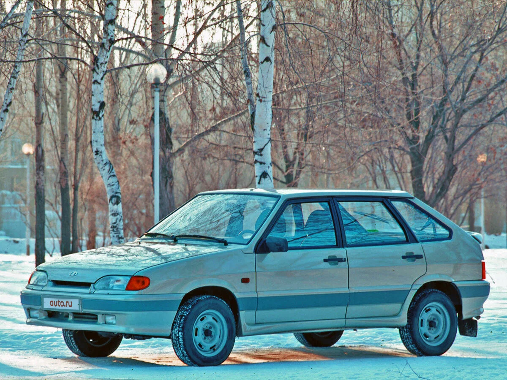
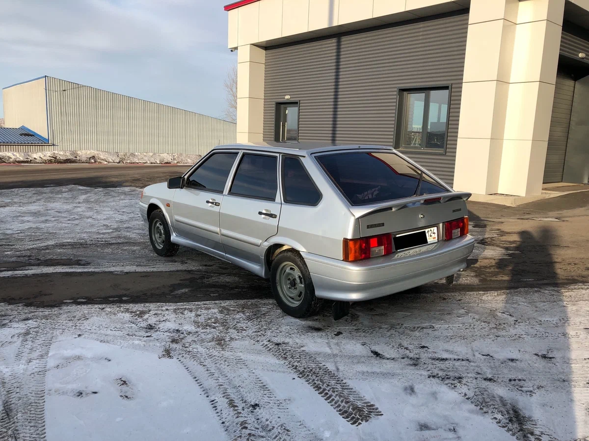

ВАЗ-2114 «Самара-2» (простореч. название «четырка») — наследник ВАЗ-2109, можно сказать рестайлинг. Отличий в экстерьере задней части кузова было меньше относительно ВАЗ-2115, были сохранена конструкция задней двери и задние блок-фары. Изначально завод планировал переделать заднюю часть автомобилей с увеличением проема задней двери и новой светотехникой, но данный проект был признан слишком затратным. Как и модель 2115, автомобили были оснащены заводскими спойлерами и бамперами, окрашенными в цвет кузова. В 2007 году автомобиль получил новую переднюю панель (в верхней части нет бардачка, использован более жёсткий материал, что увеличивает прочность, но и увеличивает вероятность возникновения посторонних шумов), новую комбинацию приборов с функцией бортового компьютера (показывает температуру за бортом, напряжение в бортовой сети, текущее время и другие параметры). Основная статья про семейство в разделе 2115.
Фото:

